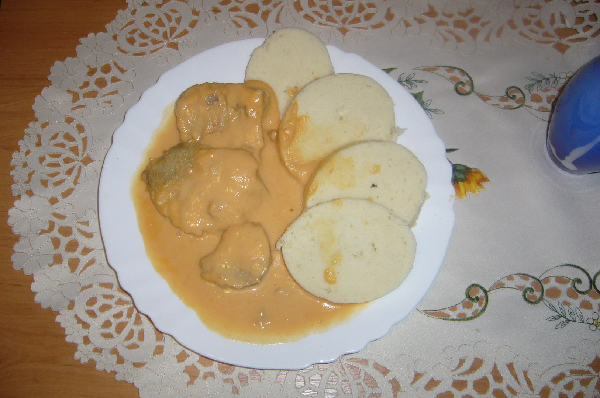

Tenderloin

Description:
Dumpling with beef and vegetables in sauce
For this recipes you will need: Dumpling, beef and some vegetables
Ingredients (4 portions):
-
800 g of beef back
-
300 g of root vegetables (carrot, celery, parsley in equal proportions)
-
1 onion
-
50 g of full-fat mustard
-
2 spoons of sugar
-
100 g of oil
-
a piece of butter
-
frying oil
-
100 g of smoked bacon
- 1 tablespoon flour (or as needed)
-
250 ml whipping cream 33%
-
3 ks bobkového listu
-
5 pieces of fresh spices
-
5 peppercorns
-
lemon juice to taste,
salt,
broth.
steps:
-
We pierce the meat with bacon chips (it works great if we put it in the freezer for half an hour) and fry it in oil or in oil with butter (the butter will not burn).
-
Then we take out the meat and fry coarsely grated vegetables and onions on the baking sheet. As soon as the carrots lose color, add sugar and let it caramelize.
-
Add mustard, spices, add vinegar, put in the meat and cover with boiling broth. Place the pot or roasting pan with the lid in the oven and bake until the meat is tender (approximately 1.5-2 hours in a moderately heated oven). Then remove the meat and spices, cut the meat and mix the sauce.
-
If necessary, thicken the sauce with plain flour dissolved in milk and boil (flour must be boiled for at least 20 minutes), adding salt as needed.
- Soften the sauce with cream, season with lemon and a slice of butter, do not cook anymore. Serve with a bun dumpling, decorate the plate with a piece of lemon and cranberries.
Note by the author of the recipe:
This procedure differs from other tenderloin recipes in that the roast is flavored at the very beginning.
back